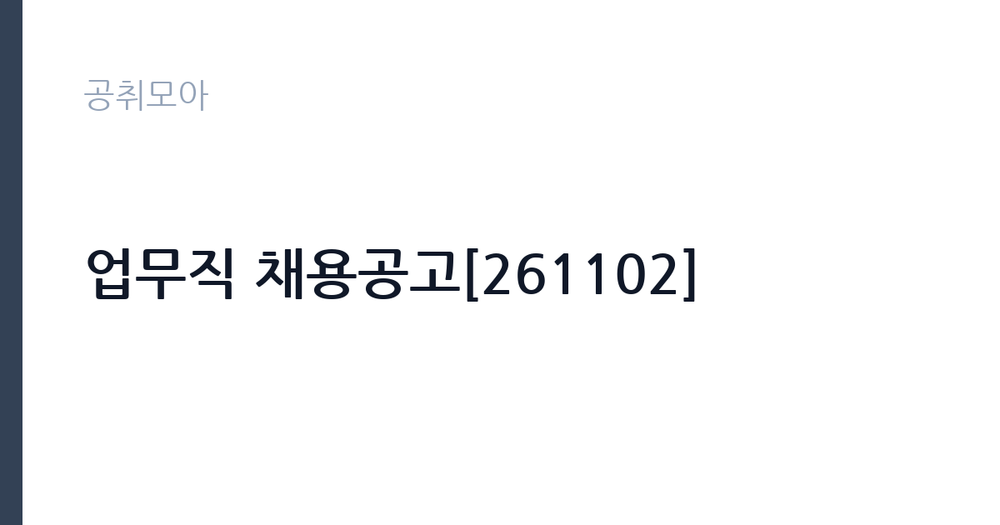

[공공기관] 업무직 채용공고[261102]
국립암센터 · 경기 · 마감 2026-11-17 (D-15) · 출처 잡알리오

한눈에 보는 모집 조건
| 기관 | 국립암센터 |
|---|---|
| 공고명 | 업무직 채용공고[261102] |
| 고용형태 | 정규직 |
| 근무지 | 경기 |
| 게시일 | 2026-11-02 |
| 마감일 | 2026-11-17 (D-15) |
지원자격, 이렇게 읽으세요
- 최종합격자 발표 이후 임용예정일부터 근무 가능한 자
정규직 채용은 기간의 정함이 없는 근로계약을 전제로 합니다. 수습 기간을 두고 평가한 뒤 정규직으로 확정하는 절차가 일반적이며 기관의 인사 규정과 임금 체계를 적용받습니다. 이번 공고는 국립암센터에서 직접 진행하는 자체 전형으로, 응시자격과 제출서류는 공고문에 항목별로 제시됩니다. 공통 요건은 병역을 마쳤거나 면제된 사람, 국립암센터 인사규정상 정년에 도달하지 않은 사람, 임용 결격사유가 없는 사람입니다. 정년은 만 60세이나 미화 직종은 만 65세로 예외가 적용됩니다. 최종합격자 발표 이후 임용예정일부터 근무가 가능해야 하며, 센터 경내가 전 지역 금연구역이므로 금연 서약에 동의해야 합니다. 직종별 자격 요건은 공고문 표에 제시되어 있으므로 본인 직종 행을 먼저 확인하십시오. 서류는 접수 마감 이후 보완이 되지 않으므로 자격 요건과 증빙 서류를 마감 전에 모두 갖춰야 합니다. 공고문에 명시된 우대 사항은 해당 여부를 확인해 증빙을 첨부해야 가점이 반영됩니다. 공고문의 응시자격 표를 보면 자격 항목이 여러 줄로 나뉘어 있으므로, 각 줄을 하나씩 체크하며 본인 해당 여부를 표시해 두면 누락을 줄일 수 있습니다.
이 공고의 포인트
이 공고의 첫 번째 포인트는 고용 형태입니다. 수습 기간 평가를 통과하면 기간의 정함이 없는 신분이 되어 고용이 안정됩니다. 두 번째는 업무 범위가 명확하다는 점입니다. 업무직(직종별 채용) 직무로 채용되므로 배치 이후 담당 업무가 크게 흔들리지 않습니다. 세 번째는 근무지입니다. 경기 지역 근무로 접근성은 좋지만 그만큼 지원자가 몰리는 지역이므로 경쟁률을 넉넉히 잡아야 합니다. 채용 규모가 크지 않아 면접 비중이 높은 전형이 될 가능성이 있습니다. 같은 직무로 함께 올라온 공고 11건 가운데 마감이 중간에 위치하므로 다른 공고와 일정이 겹치는지 확인하십시오. 선발 인원은 공고문에 명시되어 있으니 모집분야 항목을 함께 확인하십시오.
전형은 어떻게 진행되나
채용 절차는 공고문에 안내된 순서대로 진행되며, 서류 접수 마감 후에는 추가 접수나 서류 보완이 이뤄지지 않는 것이 원칙입니다. 서류심사에서는 응시자격과 제출서류의 형식 요건을 기계적으로 확인하므로, 경력 증명서의 기간과 직무 내용이 공고의 요건과 정확히 맞아야 합니다. 면접은 지원자 수에 따라 집단면접과 개별면접으로 나뉘고, 직무 관련 질문과 상황 대응 질문이 함께 나옵니다. 합격자 발표는 개별 통보 또는 홈페이지 게시로 이뤄지며 이후 임용 절차가 진행됩니다. 면접조 편성과 대기 시간이 공지되므로 당일 도착 시간을 여유 있게 잡으십시오.
원문에서 확인한 전형 방식
- 병역을 마쳤거나 면제된 자 - 국립암센터 인사규정에 따른 정년(만 60세)에 도달하지 않은 자 * 미화 직종의 경우 만 65세 - 국립암센터 인사규정에 따른 임용 결격 사유에 해당하지 않는 자 - 최종합격자 발표 이후 임용예정일부터 근무 가능한 자 - 암발생 및 사망률을 감소시키고 암 환자들의 삶의 질을 높이고자 하는 국립암센터 설립목적 수행에 적극 동참하고자 하는 자 - 국립암센터 경내는 전 지역을 금연구역으로 설정·운영하고 있으므로 금연운동에 적극 동참하고자 하는 자
이런 분께 추천해요
- 지원 직종의 요건을 충족하는 분
- 병원·시설 환경 근무 경험이 있는 분
- 교대 근무와 장기 근무가 가능한 분
지원 전 체크리스트
- 응시자격 요건과 경력 기준을 충족하는가 — 경력은 증명서로 입증해야 합니다
- 수습 기간과 정규직 전환 조건을 확인했는가
- 제출서류 목록을 모두 준비했는가 — 누락 시 서류 단계에서 탈락합니다
- 접수 마감 2026-11-17 이전에 접수 방식을 확인해 제출했는가
모집 일정과 제출 타이밍
2026-11-02에 공고가 올라왔고 접수는 2026-11-17까지입니다. 남은 기간은 15일이며, 이 기간에 자격증 사본과 경력증명서, 주민등록등본 같은 기본 서류를 모두 준비해야 합니다. 경력증명서는 발급에 며칠이 걸리는 경우가 있으니 가장 먼저 신청하십시오. 접수는 온라인과 우편·방문으로 나뉘는 경우가 많고, 우편 접수는 도착 기준으로 판정되므로 마감일 소인만 믿으면 안 됩니다. 면접 일정은 서류 발표 후 개별 통보되므로 제출 후에도 연락을 받을 수 있도록 유지해야 합니다. 공휴일이 끼어 있으면 증명서 발급이 늦어질 수 있으니 발급 일정을 앞당기십시오. 경기 지역 근무지는 사업소나 시설이 외곽에 있는 경우가 많아 차량 통근 가능 여부를 확인해야 합니다. 마감까지 여유가 있어 자격 요건을 천천히 확인하고 준비할 수 있습니다. 선발 인원은 공고문의 모집분야 항목에 직종별로 제시되어 있습니다.
직무 이해하기: 공공기관
국립암센터는 암 연구와 진료를 함께 수행하는 보건복지부 산하 기관입니다. 이번 업무직 채용은 공고 제목에 직종이 드러나지 않아 첨부 공고문의 직종표로 확인해야 합니다. 업무직은 진료 지원, 시설·환경 관리, 물류·비품 관리, 원무 지원 같은 분야로 나뉘고, 배치 부서에 따라 사무 비중과 현장 비중이 크게 달라집니다. 공고문에 미화 직종의 정년을 만 65세로 따로 규정한 점으로 보아 환경·미화 분야가 포함된 것으로 보입니다. 근무 부서와 교대 여부는 면접에서 확인하는 것이 가장 정확합니다. 현장 업무와 사무 업무의 비중은 기관의 사업 일정에 따라 계절별로 달라집니다.
자기소개서 작성 팁
지원서는 지원 직종을 명확히 밝히고 그 직무의 경험을 앞세우는 것이 중요합니다. 시설·환경 분야라면 담당했던 구역과 작업 주기, 안전 수칙 준수 경험을 쓰십시오. 진료 지원 분야라면 환자 응대와 개인정보 관리 경험을 구체적으로 제시하십시오. 장기 근무 의사와 결근 없이 근무할 수 있다는 점을 분명히 밝히면 좋습니다. 문항별 글자 수 제한을 먼저 확인하고, 각 문항의 첫 문장에 결론을 배치하는 방식이 읽기 쉽습니다. 지원 동기는 기관의 어떤 사업에 기여하겠다는 한 문장으로 시작하고, 이어서 본인의 경험을 근거로 붙이십시오. 감점을 피하려면 다른 기관에 보낼 수 있는 범용 문장을 그대로 쓰지 않는 것이 중요합니다. 기관 이름과 사업명이 문장 안에 자연스럽게 들어가야 준비도가 드러납니다.
면접 준비 포인트
면접에서는 지원 직종의 실무 경험과 근무 태도를 확인합니다. 이전 근무지에서 맡았던 업무 범위와 처리 건수, 동료와 역할을 나눈 방식을 구체적으로 답하십시오. 병원 환경은 위생과 안전 관리가 중요하므로 관련 습관을 언급하면 신뢰를 얻습니다. 교대 근무와 주말 근무 가능 여부도 확인 질문으로 나옵니다. 답변은 상황, 판단, 조치의 순서로 정리하면 전달이 분명해집니다. 모르는 질문에는 모른다고 밝히고 확인 방법을 제시하는 편이 억지 답변보다 낫습니다. 마지막에는 근무 의사와 함께 2026-11-17 이후 일정에 언제든 응할 수 있다는 점을 전달하십시오. 답변 시간이 짧게 정해져 있는 경우가 있으므로 핵심 문장을 먼저 말하고 근거를 붙이는 방식이 유리합니다.
급여·근무조건 읽는 법
국립암센터는 알리오 2025년 결산 공시 기준 일반정규직 1인당 평균보수 8,242만원, 신입사원 초임 4,324만원으로 공시되어 있습니다. 다만 이번 업무직 채용은 정규직 여부와 직종에 따라 적용 임금표가 달라지므로, 위 초임이 그대로 적용된다고 단정할 수 없습니다. 평균보수는 기본급에 고정수당·성과상여금·급여성 복리후생비를 합산한 값입니다. 직종별 보수와 수당 항목은 공고문 처우표에서 확인하십시오. 2026년 적용 최저임금은 시급 10,320원, 월 환산 2,156,880원(주 40시간·209시간 기준)입니다. 고용노동부 고시 제2025-47호로 확정된 금액입니다. 공고문에 금액이 제시되지 않은 항목은 원문 보수표나 처우 설명에서 확인해야 하며 확인되지 않은 수치는 쓰지 않는 것이 원칙입니다. 비교할 때는 월 급여뿐 아니라 상여·명절휴가비·복지포인트·초과근무수당까지 포함한 연간 총액으로 계산하십시오. 기간제라면 계약 기간 동안의 총액을, 무기계약이라면 호봉 상승과 정년까지의 누적 소득을 기준으로 판단하는 편이 정확합니다.
자주 묻는 질문
- 선발 인원은 몇 명인가요?
공고문의 모집분야 항목에 직종별 인원이 표로 제시되어 있습니다. 첨부된 공고문 원문에서 확인하십시오. - 근무지는 어디인가요?
경기 지역의 국립암센터 소속 근무지입니다. 세부 주소와 출퇴근 조건은 원문 공고문에서 확인할 수 있습니다. - 보수는 얼마인가요?
채용 신분(정규직)과 기관 임금 규정에 따라 정해지며 구체적인 금액은 공고문 처우 항목에 제시됩니다. 금액이 공개되지 않은 경우에는 원문의 보수표를 확인하십시오.
함께 보면 좋은 공고
[공공기관] 2026년 한국특허정보원 체험형 청년인턴 채용 — 마감 2026-11-18[공공기관] 한국폴리텍대학 진주캠퍼스 행정지원직(사무직원 휴직 대체인력) 채용 공고 — 마감 2026-11-10[공공기관] 대구경북첨단의료산업진흥재단 2026년 3차 정원외 계약직원 채용공 — 마감 2026-11-17출처: 잡알리오 공개정보를 바탕으로 공취모아가 정리한 안내글입니다. 모집 조건·일정은 변경될 수 있으니 지원 전 반드시 원문 공고문을 확인하세요. 본 글은 정보 제공용이며 합격을 보장하지 않습니다.